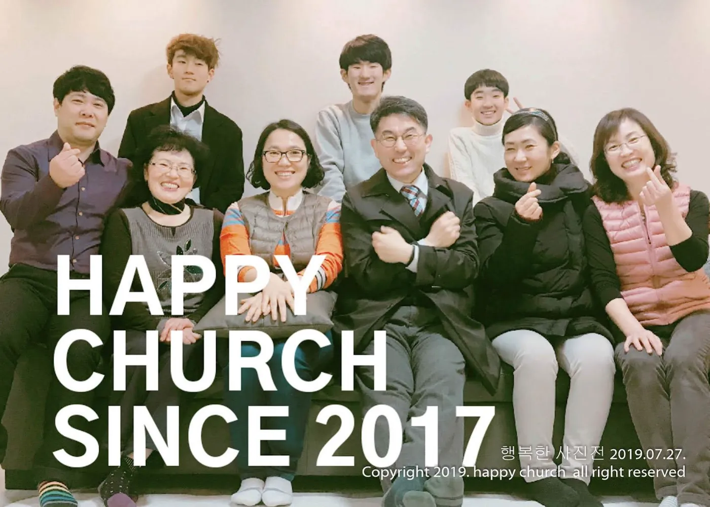
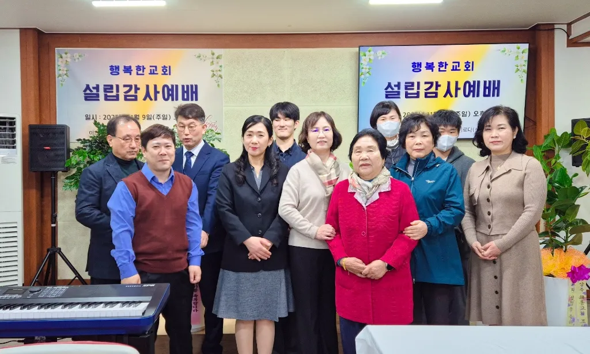
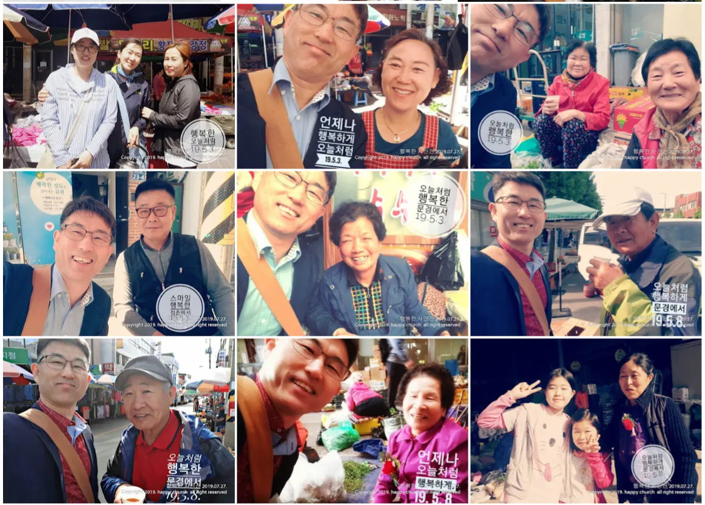

날마다 예수 그리스도로 행복을 경험하는 공동체

행복한교회는 2017년 12월 10일, '우리 보금자리 요양원' 2층에서 드려진 첫 예배로부터 그 소중한 여정이 시작되었습니다.
2018년 7월 10일, 하나님의 은혜 가운데 공식적인 교회 설립 예배를 드렸으며 오늘날까지 문경 땅에 하나님 나라의 행복을 전하는 사명을 감당하고 있습니다.

행복한교회는 주님 주신 사명을 따라 4가지 핵심 사역에 집중합니다.

2018년부터 신흥시장 입구에서 한결같이 이어온 차(茶) 섬김은 우리 교회의 자랑이자 행복입니다.
여름에는 시원한 보리차로, 겨울에는 따뜻한 차 한 잔으로 상인들과 정을 나누며 지역 사회의 든든한 이웃으로 자리 잡았습니다.